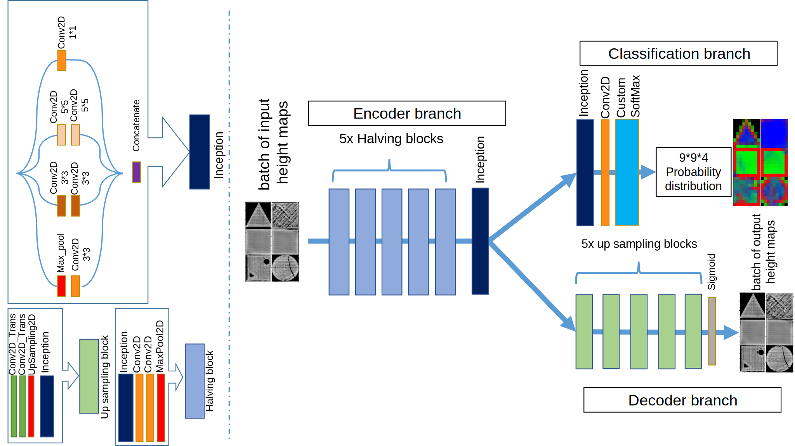
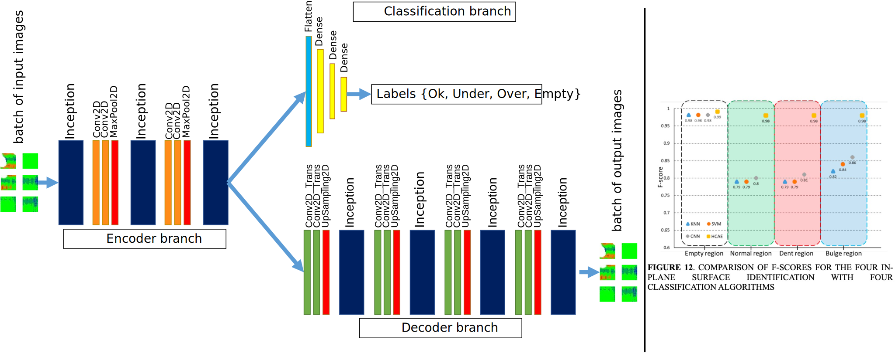
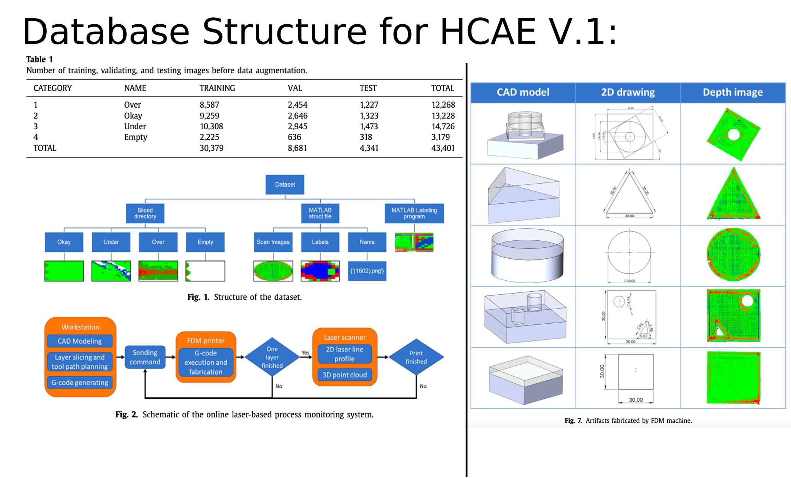
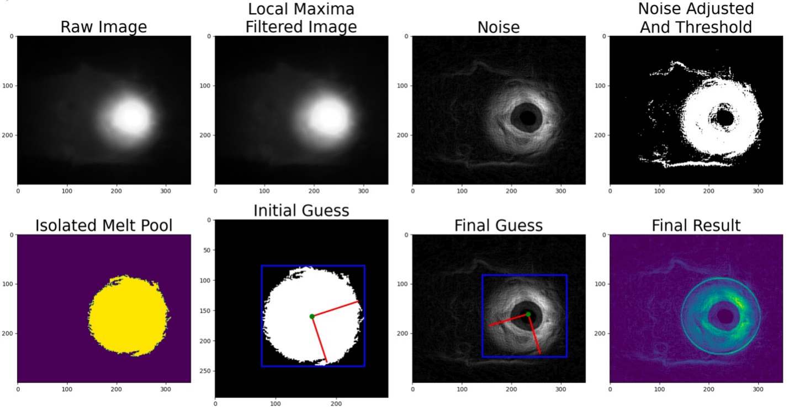
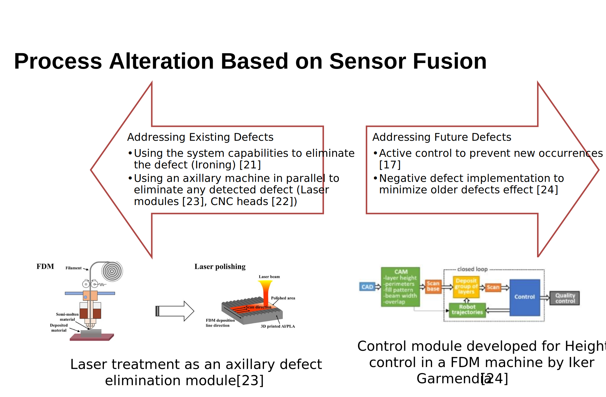
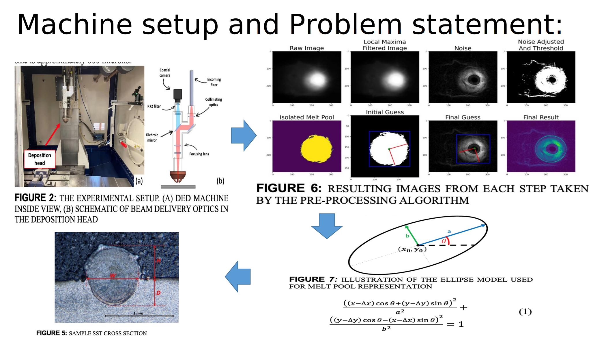

Publications
Realtime coaxial monitoring and print cross-section's image dataset of Direct Energy Deposition fabrication.
-
Real-time monitoring and gaussian process-based estimation of the melt pool profile in direct energy deposition. (Accepted)






